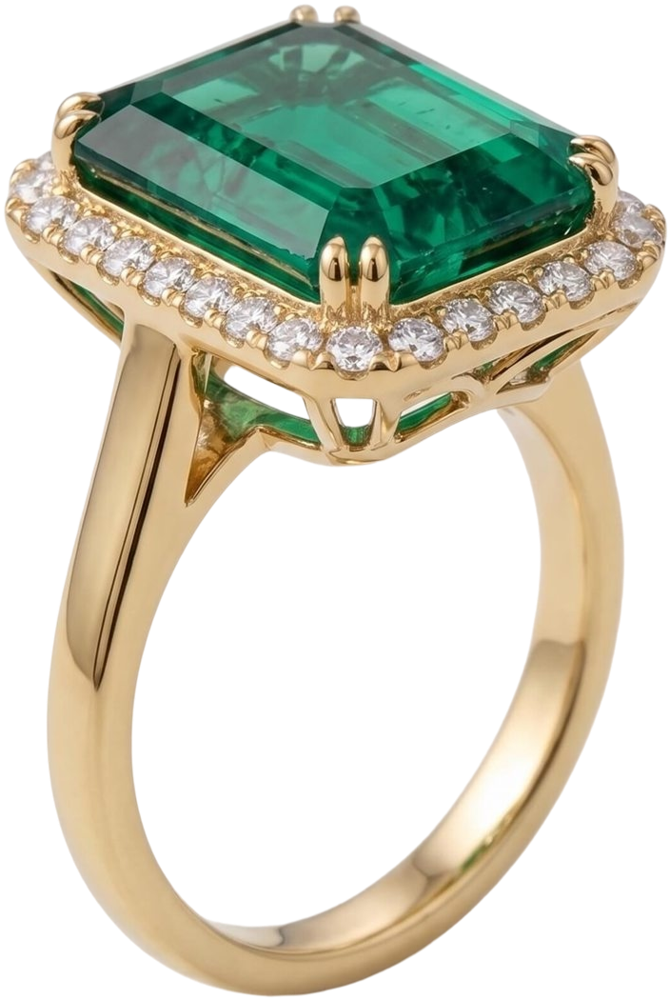

4

4This page has slipped off
Like a ring left on a basin, it is not where it should be. The pieces you came for are still here.

4This page has slipped off
Like a ring left on a basin, it is not where it should be. The pieces you came for are still here.